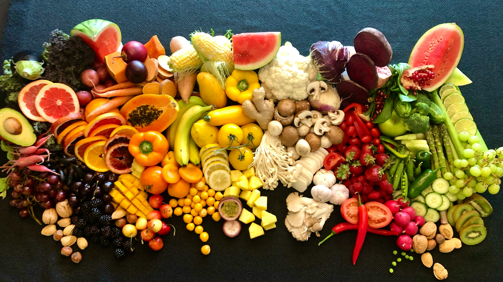

About
Sometimes you have plenty of food in the kitchen, you just don't have everything a recipe calls for.
Maybe you have a few vegetables, some pasta, a can of beans, and a handful of spices, but you can't get to the store. You don't want to spend money on more groceries, and you definitely don't want the food you already have to go to waste.
That's why I created The Partial Pantry.
The Partial Pantry helps you figure out what you can make with what you already have. Instead of finding a recipe and then making a shopping list, you start with the ingredients in your kitchen. Enter what you have on hand, and The Partial Pantry finds recipes that use only those ingredients.
You can also create an account, save your favorite recipes, and keep track of the ingredients you currently have. Pantry staples like spices and canned or dry goods can stay on your list, while ingredients that come and go, like fresh fruits and vegetables, can be updated as needed.
The idea is simple: don't start with what a recipe needs. Start with what you already have.
Whether you're trying to avoid an extra trip to the grocery store, save a little money, use up ingredients before they go bad, or just figure out what you can make for dinner, The Partial Pantry is here to help.
